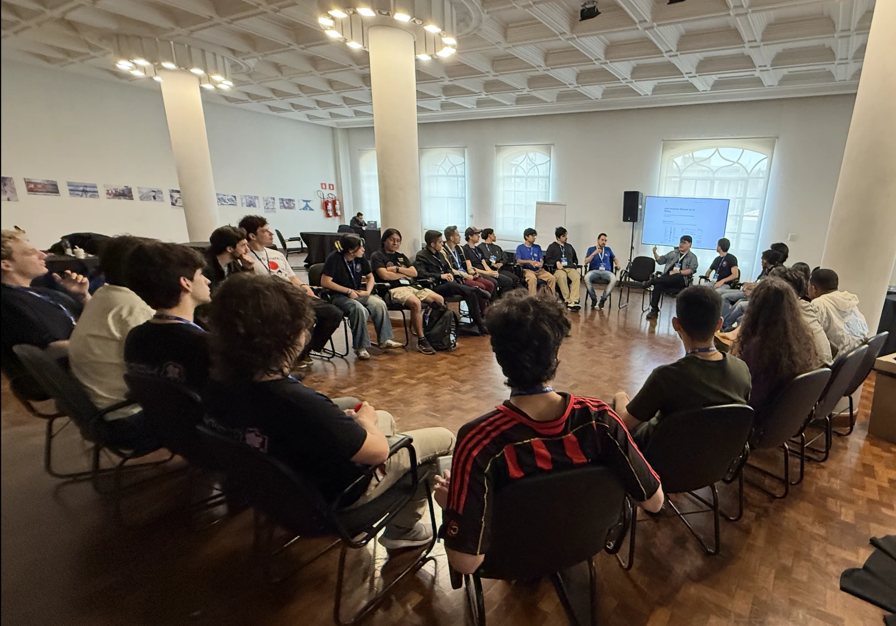
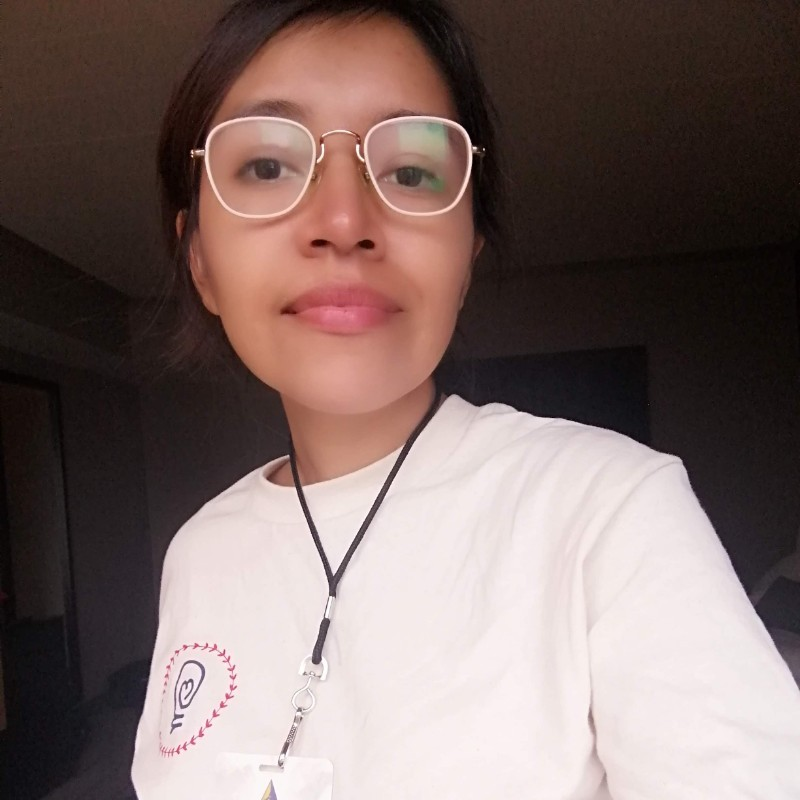
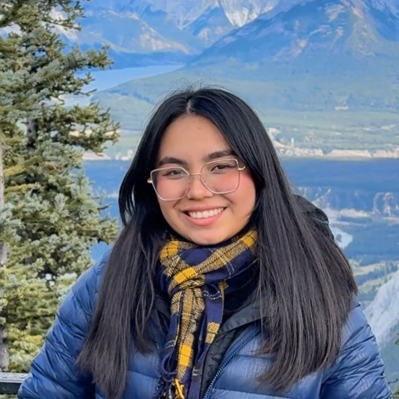
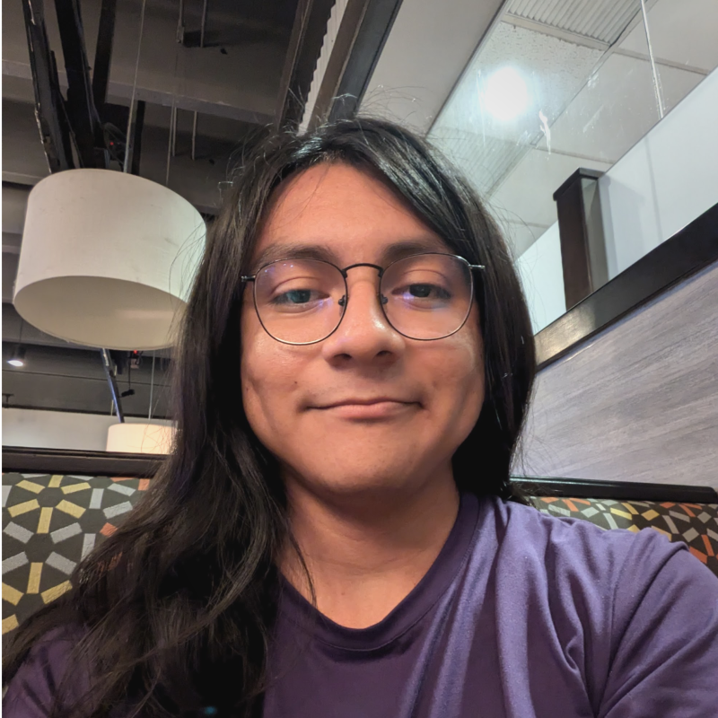
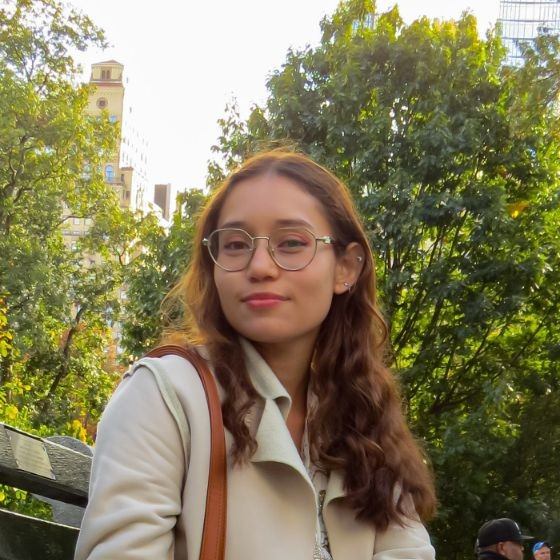

Sobre nosotros
AI Safety Mexico es una organización académica dedicada a promover la investigación, educación y políticas sobre la seguridad y alineación de la inteligencia artificial en México. Nuestra misión es fomentar la colaboración entre investigadores, desarrolladores, y responsables políticos para garantizar que los sistemas de IA se desarrollen de forma segura y beneficiosa para toda la sociedad mexicana.
Nuestra teoría del cambio
No estamos construyendo una comunidad para «unirse». Estamos construyendo una plataforma de despegue hacia la frontera de la seguridad en IA y la voz creíble de investigación de México: un puñado de mexicanos de alta agencia persiguiendo la frontera, un cuerpo citable de investigación y un puente en español hacia quienes decidirán cómo México enfrenta la IA avanzada.
Ambición
Sembrar en México un cuerpo de trabajo que produzca investigación propia en áreas clave de seguridad en IA. Nuestra referencia son los AI Safety Institutes.
De ahí se siguen dos efectos: funcionar como capa de traducción al español de la IA de frontera, y como una voz creíble y no partidista a la que un tomador de decisiones mexicano pueda llamar.
Ese es el norte de largo plazo; todo lo que hacemos hoy construye hacia allá.
Política guía
Lograr que un número pequeño de personas de alta agencia se auto-propulsen hacia la frontera, producir un cuerpo de investigación citable y traducirlo para tomadores de decisiones mexicanos y para el mundo hispanohablante.
Todo apoyándonos en infraestructura que ya existe (Apart, SPAR, BlueDot, Atlas, instituciones académicas en México) en lugar de construir la nuestra desde cero.
Cómo medimos el crecimiento
- Postulaciones contrafactuales. Mexicanos que le dan a «enviar» en SPAR, Apart, MATS o en vacantes de Estados Unidos y China. La mayoría será rechazada, por diseño; lo que cuenta es que apliquen.
- Auto-propulsión y retención. Cuántos continúan más allá de las primeras veinte horas acompañadas.
- Producción de investigación. Experimentos y artículos publicados, y equipos aceptados en SPAR.
- Financiamiento y pista de despegue. Recursos levantados a lo largo de la escalera de fondeo.
- Credibilidad y visibilidad. Academia y tomadores de decisiones en el circuito, y solicitudes de consulta del gobierno.

Actividades en curso
Impulsando la comunidad de AI Safety en México: Tech Policy Panel
Un panel sobre cómo la regulación de la inteligencia artificial impactará al ecosistema tecnológico de México y América Latina.
Primer viernes del mes. La fecha, el lugar y el registro de cada mesa —y del resto de la agenda— están en el calendario de AI Safety México en Luma.
Cómo participar
Cuatro caminos, según desde dónde llegas. Si no encajas en ninguno, escríbenos igual: contact@aismx.org.
Pedir un curso in-house
Llevamos a facultades y centros de investigación los cursos de fundamentos, gobernanza y el curso técnico de seguridad en IA. Ya lo hicimos en el Centro de Investigación Geoestadística y en la Facultad de Matemáticas de la UADY.
Si tu institución quiere una edición a la medida, cuéntanos el público, las fechas tentativas y si necesitan la versión introductoria o la técnica.
VIGÍA
VIGÍA es el recurso abierto para quien investiga gobernanza de IA y soberanía digital en México: un observatorio del Diario Oficial de la Federación que identifica menciones de IA, huecos regulatorios y riesgos.
Sirve como base de datos, metodología y punto de partida para papers, notas de política o periodismo de investigación.
Estancias AISMx × UPY
Programa de estancias de AI Safety México en colaboración con la Universidad Politécnica de Yucatán. Está pensado para estudiantes que quieran pasar de los cursos a trabajar con el equipo en un proyecto concreto.
Si estudias en UPY o en otra universidad y quieres postular, escríbenos con tu formación y qué te interesa trabajar.
Eventos y talks
El próximo evento es el panel de Mexico Tech Week. El resto de la agenda —mesas de trabajo, talleres, pre-talks— vive en Luma. Las pre-talks y talks del Global South AIS Hackathon están en nuestro canal de YouTube.
Actividades Pasadas
Organizamos las sedes mexicanas del hackatón junto con Apart Research: dos hubs simultáneos en Mérida y Guadalajara más participación remota, con 65 asistentes que formaron 19 equipos y entregaron 19 proyectos de investigación.
Un proyecto quedó en el 20% superior global y cuatro en el 50% superior, aunque ningún participante llegó con publicaciones o experiencia previa en seguridad de IA. Uno de ellos, sobre soberanía y vulnerabilidad de la IA en una potencia media, continuó en el programa de fellowship de Apart Research.
Tu agente de CLI opera como si fueras tú. Tiene tus permisos, tus credenciales, acceso a tu sistema de archivos, y actúa a velocidad de máquina, guiado por un modelo que no entrenaste, sobre una infraestructura que no controlas.
Este taller trato sobre las implicaciones de ceder el control y de qué hacer al respecto.
La primera mitad fue una conversación sobre seguridad en IA y soberanía de los datos y la segunda mitad fue práctica. Instalando Greywall integrado con Claude Code y analizando en tiempo real qué está haciendo la red y sistema de archivos.
Te invitamos a saber más de Greywall aquí: https://greywall.io/
Programas educativos y colaboraciones
Curso de Fundamentos de Seguridad en IA y Gobernanza en IA
Se han realizado cursos gratuitos para la comunidad basados en el material de AI Safety Fundamentals de BlueDot Impact, ARENA, AI Safety Collab y AI Safety Atlas. Jason Pinelo, Angel Tenorio, Janeth Valdivia, Isabel Cámara y Karime Pacheco fungieron como facilitadores de estos programas, que introducen los conceptos fundamentales de seguridad y gobernanza en inteligencia artificial.


Curso Técnico de Seguridad en IA
Curso sobre aspectos técnicos de seguridad en IA, con sesiones intensivas basadas en los materiales de ARENA. Este curso profundiza en los aspectos técnicos de la seguridad en sistemas de IA. Jason Pinelo y Angel Tenorio fungen como facilitadores de este programa.
Seguridad en IA para Instituciones
Se han impartido cursos especializados sobre seguridad en IA en el Centro de Investigación Geoestadística, a cargo de Angel Tenorio y Silvia Fernández. También se llevó a cabo un curso en la Facultad de Matemáticas de la UADY, dirigido por Silvia Fernández, Angel Tenorio y Jason Pinelo.


VIGÍA: Plataforma para el análisis de gobernanza de IA y soberanía digital en México
VIGÍA (Valoración de Impactos Gubernamentales de Inteligencia Artificial) es una plataforma en desarrollo que surge como parte de los proyectos del curso de AI Governance, en colaboración con ENAIS. El proyecto recibió un Special Recognition en la AI Safety Collab 2025 Summer Action Competition por su propuesta de infraestructura regional para el análisis de políticas públicas relacionadas con inteligencia artificial.
El equipo detrás del proyecto está conformado por: Pilar Carolina Moncada Santana, Jason Maximiliano Pinelo Hau, Axel Alexander Pinelo Hau, Janeth Valdivia y Angel Tenorio.
SPAR – AI Safety Connect
Integrantes de AI Safety México, Jason Pinelo, Dexter Gómez y Janeth Valdivia, tuvieron la oportunidad de participar en el Supervised Program for Alignment Research (SPAR), un programa de investigación que conecta a talento emergente con especialistas para abordar los riesgos asociados al desarrollo de la inteligencia artificial.
Como equipo mexicano trabajamos en el proyecto AI Safety Connect, el cual pretende minimizar la brecha estructural de coordinación entre la investigación académica y las comunidades de seguridad en inteligencia artificial mediante la construcción de una plataforma integrada que mapea de forma sistemática autores, publicaciones y áreas temáticas relevantes para la seguridad de la IA por medio de una taxonomía estructurada, búsqueda semántica y pipelines de datos escalables.
Agradecemos a SPAR Research, a Jaime Raldua Veuthey y a todas las personas comprometidas que hicieron posible la colaboración en este proyecto: Julius A. Odai, Ihor Kendiukhov, Tim Sankara, Jakub K. Nowak y Kailer Laino.

Investigación
Nuestro equipo participa activamente en proyectos de investigación orientados a la seguridad en inteligencia artificial:
Evaluación de Seguridad en Modelos de IA
Miguel Angel Peñaloza está trabajando en construir evaluaciones para medir el comportamiento de los modelos en cuanto a seguridad. Este proyecto busca desarrollar métricas y herramientas para la evaluación sistemática de riesgos en sistemas de IA.
AI Safety in Mexico: A Pilot Survey in Yucatan
Janet Valdivia, Silvia Fernández, Valeria Ramírez y Angel Tenorio realizaron el trabajo "A pilot survey conducted in Yucatán, México", destinado a capturar preocupaciones locales acerca de la seguridad en inteligencia artificial en Mérida, Yucatán.
Desarrollo Profesional: ML4Good
Angel Tenorio, Max Pinelo, Isabel Cámara y Janeth Valdivia asistieron al campamento ML4Good para incrementar sus conocimientos en seguridad de inteligencia artificial y aplicar estos conocimientos en sus investigaciones y actividades educativas.
Participación en EAGxCDMX
En el marco de la conferencia Effective Altruism Global X Ciudad de México (EAGxCDMX), Silvia Fernández, Angel Tenorio y Jason Pinelo impartieron el taller "Not so speedy AI Safety", evento diseñado para establecer vínculos colaborativos con especialistas del área y difundir el trabajo desarrollado en México sobre seguridad en inteligencia artificial a la comunidad internacional.
Recursos abiertos
Ver el directorio completo →Mantenemos un directorio curado de cursos, programas de investigación, fellowships de política, financiamiento y comunidades, con los enlaces verificados uno por uno. Está pensado para quien quiera empezar o dar el siguiente paso desde México y América Latina.
Equipo
Nuestro equipo está formado por profesionales dedicados a la seguridad en inteligencia artificial desde diferentes perspectivas y áreas de especialización:




Advisors
Contamos con el acompañamiento de advisors que brindan orientación estratégica y académica a AI Safety Mexico.
Dra. Silvia Fernández
Advisor, Investigadora Centro Geo
Colaboraciones
Cursos, eventos e investigación que no habríamos podido hacer solos. Estas son las alianzas con las que hemos construido en el último año.
ENAIS
Con ENAIS impartimos dos cursos: uno de gobernanza de IA y otro técnico de seguridad en IA. De esa colaboración salió también VIGÍA, que recibió un Special Recognition en la AI Safety Collab 2025.
Apart Research
Partner en México del Global South AIS Hackathon: hubs en Mérida y Guadalajara, participación remota y un pipeline hacia el fellowship de Apart. 65 asistentes, 19 proyectos, uno de ellos continuó en el fellowship.
Cursor
Dos colaboraciones en Mérida: el Cursor Mérida Challenge —AI Safety Edition— durante el Global South, y el workshop de AI Strategy (AGI Strategy Build Day) con la Universidad Politécnica de Yucatán.
BlueDot Impact
Obtuvimos una subvención de BlueDot Impact para llevar a cabo el panel Impulsando la comunidad de AI Safety en México: Tech Policy Panel en el marco de México Tech Week.
Contacto
Para cursos in-house, estancias, investigación o para colaborar con nosotros:
Correo electrónico: contact@aismx.org